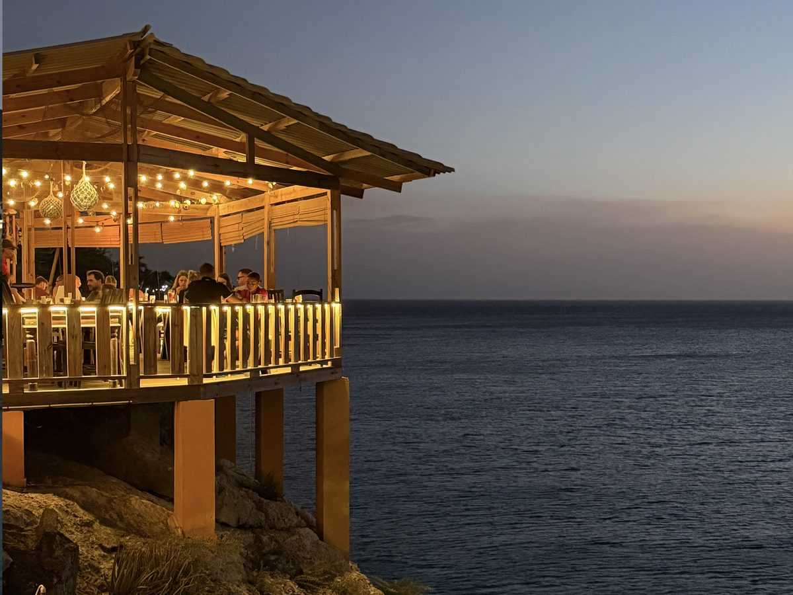

Restaurant Playa Forti
Daily 10:30 AM–7 PM (to 8 PM Sat–Sun)
Clifftop restaurant above Playa Forti with a wide-open view of the bay. Fresh fish and local dishes, plus vegetarian options. The cliff jumpers launch from right beside the terrace.
Tip Ask for a table along the cliff edge, and come for sunset.